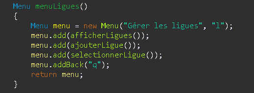
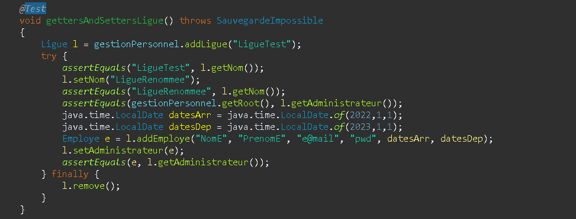
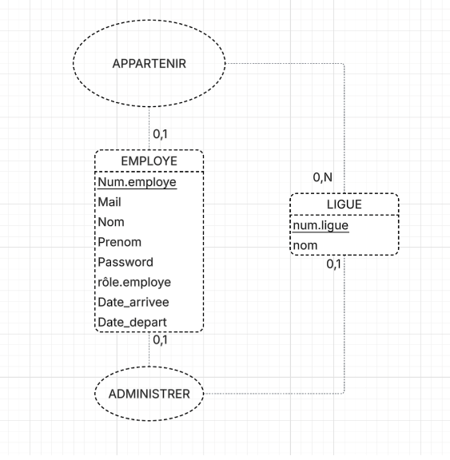
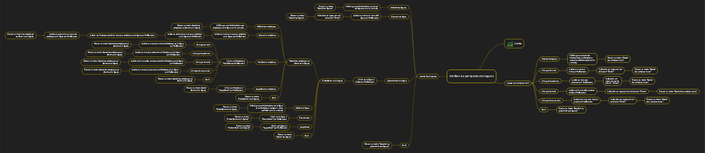
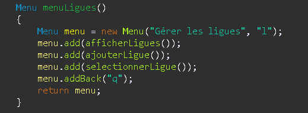
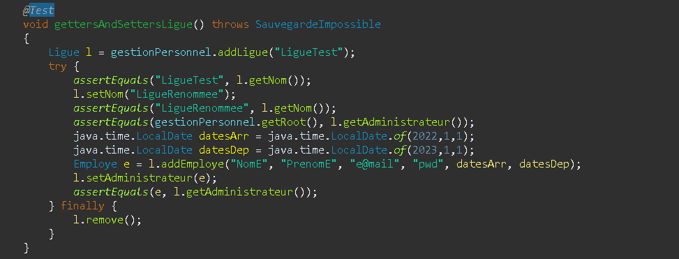
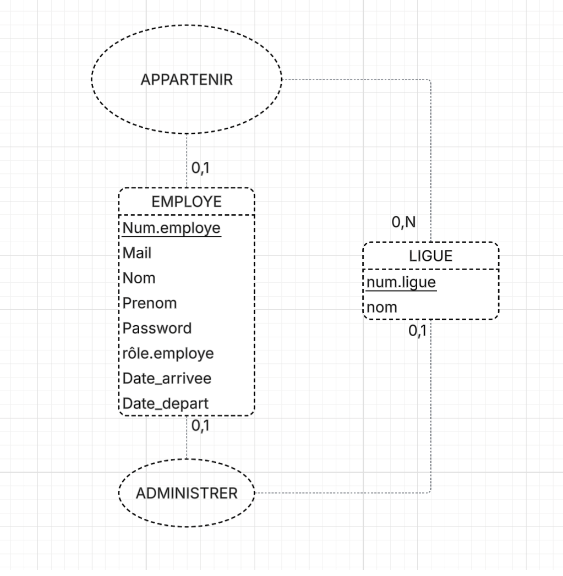
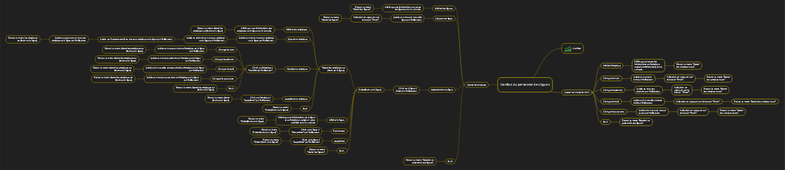

Projet BTS SIO
Présentation
Ce projet informatique a été réalisé dans le cadre d’un travail de groupe. Il consiste en le développement d’une application console en Java permettant la gestion d’une organisation de ligues sportives. L’application repose sur une base de données relationnelle en SQL afin d’assurer la persistance et la cohérence des données.
Technologies utilisées
- Langages : Java , SQL
- Frameworks / Outils : à indiquer
- Bases de données, serveurs, etc.
Documentation du Projet
exemple.pdf
Galerie d'images
 







Contact
ilies Bounxou — ilies.bounxou@gmail.com — Mon Github